Author: Adila Isfandiari Ester Meryana adila@sustain.or.id mery@sustain.or.id Tata Mustasya tata@sustain.or.id
Publisher: sustain.or.id
Yayasan Kesejahteraan Berkelanjutan Indonesia (SUSTAIN)
The Strategic Role of PLTS Atap (Rooftop Solar) and Power Wheeling in Achieving the Ambition of 100 GW of Solar Energy
• The government is targeting the construction of 17 GW Solar Power Plant (PLTS – Pembangkit Listrik Tenaga Surya) in three years as part of the 100 GW National Solar Energy Program. However, the development of solar energy in Indonesia is still progressing slowly and cannot rely entirely on government and PLN (Perusahaan Listrik Negara – Indonesia State Electricity Company) investment amid the country's fiscal limitations.
• Existing electricity demand from households and industry presents a substantial opportunity to accelerate solar energy deployment in Indonesia through rooftop solar PV and power wheeling. In an accelerated scenario, additional solar capacity could reach around 11.4 GWp within a relatively short period, making a meaningful contribution toward achieving the national target of 17 GW of solar PV development within the next three years.
• Accelerating solar energy also requires strengthening the electricity grid to maintain system stability. In this context, increasing coal production levies has the potential to become a source of domestic funding to support grid development and renewable energy integration.
• To accelerate the achievement of the 100 GW National Solar Energy Program, the government needs to transform itself into a market enabler by opening access to the solar energy market, strengthening the electricity system, enabling the realization of solar energy demand, as well as strengthening the green industry and domestic supply chains.
The energy transition in Indonesia is gaining significant momentum and is determining the energy future for society. In mid-2025, President Prabowo Subianto expressed his ambition to implement a 100 GW solar energy program in Indonesia. This ambitious program continues to be promoted by the Prabowo Administration, especially in the midst of the global energy crisis which threatens the country's energy security.
In March 2026, President Prabowo formed an Energy Transition Task Force (Satgas – Satuan Tugas)¹ chaired by the Minister of Energy and Mineral Resources (ESDM – Energi dan Sumber Daya Mineral) to accelerate the implementation of the 100 Gigawa Program within the next 3 to 5 years. For this reason, President Prabowo is targeting the construction of a 17 Gigawa PLTS starting in 2026.²
However, amid challenging economic conditions, the 100 Gigawa Program faces major hurdles to its realization, including Indonesia's slow energy transition, particularly in solar energy, and limited state fiscal capacity.
The Prabowo Subianto Government's ambition to create the 100 Gigawa solar energy program needs to be accompanied by a reality check on Indonesia's energy transition, which is currently still progressing slowly. Based on the Performance Report of the Directorate General of New, Renewable Energy, and Energy Conservation (EBTKE – Energi Baru, Terbarukan, dan Konservasi Energi) of the Ministry of Energy and Mineral Resources for 2025,³ the realization of the national renewable energy mix is consistently below the government's target. In 2017, for example, the renewable energy mix target of 10.9 percent was only fulfilled at around 6.7 percent. The gap between targets and achievements persists until 2024, when the target of 19.5 percent is achieved only at 14.65 percent.
Figure 1. Realization of the Share of Renewable Energy in the National Energy Mix 2017-2024
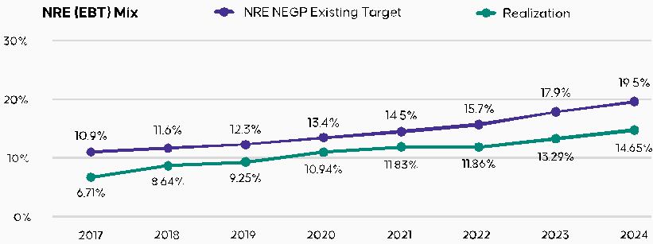
NRE (EBT) Mix
NRE NEGP Existing Target
Realization
30%
19.5%
17.9%
20%
15.7%
14.5%
13.4%
12.3%
11.6%
10.9%
14.65%
13.29%
10%
11.86%
11.83%
10.94%
9.25%
8.64%
6.71%
0%
2018
2019
2020
2021
2022
2023
2024
2017
Source: Performance Report of Directorate General of New, Renewable Energy, and Energy Conservation 2025⁴
¹ Sekretariat Kabinet Republik Indonesia. Presiden Prabowo Bentuk Satgas Percepatan Transisi Energi untuk Capai Kedaulatan Energi Nasional. URL.
² Sekretariat Kabinet Republik Indonesia (Setkab RI), “Pacu Program Energi Surya Nasional 100 Gigawa, Presiden Prabowo Targetkan 17 Gigawa PLTS Terbangun Tahun Ini,” accessed on 26 May 2026, . URL
³ Kementerian Energi dan Sumber Daya Mineral. (2026). Laporan Kinerja Ditjen EBTKE Tahun 2025. URL.
⁴ Ibid.
Meanwhile, the realization of the national renewable energy mix in 2025 has reached only 15.75 percent,⁵ still lagging behind the target of 23 percent set in the National Energy Policy (KEN – Kebijakan Energi Nasional) before it was revised by Government Regulation Number 40 of 2025. In the electricity sector, the realization of installed capacity for renewable energy generation reached 15,630 Megawas (MW)⁶ in 2025. Of the total renewable energy generation capacity, solar energy accounts for only around 1,494 MW or about 1.4 percent of the total national electricity generation capacity.
Compared to the total national installed electricity capacity of 107.51 GW,⁷ Indonesia's electricity system is still dominated by fossil-based power plants with a share of around 85 percent. This condition shows that Indonesia's large solar energy potential, namely 3,294 peak gigawas (GWp),⁸ has not been accompanied by adequate acceleration in development. As a result, Indonesia is still lagging behind ASEAN⁹ countries such as Vietnam, Thailand, the Philippines, and Malaysia in the use of solar energy.
Figure 2. Increase in Renewable Energy Generating Capacity 2021-2025
ADDITIONAL ANNUAL INSTALLED |
1,540.5 MW |
|||||
|---|---|---|---|---|---|---|
Power Plants - Until December |
2025 |
1,305.5 MW |
||||
967.5MW |
992.9MW |
741.5MW |
||||
Bioenergy |
||||||
Geothermal |
||||||
Water |
||||||
2021 |
2022 |
2023 |
2024 |
2025 REAL |
2025 TARGET |
|
Additional Installed Capacity (MW) |
||||||
NRE Power Plant |
2021 |
2022 |
2023 |
2024 |
2025 REAL |
2025 |
Target |
||||||
Wind |
0 |
0 |
||||
0 |
0 |
0 |
0 |
|||
Solar |
37.1 |
809.4 84.6 |
307.7 |
311.5 |
584.7 |
705.6 |
Bioenergy |
98.4 64 |
6.6 |
58.1 270.9 |
41.3 275.3 |
105.1 84.5 |
103.2 373.9 |
Geothermal Water |
967.5 |
992.9 |
104.8 |
486.6 |
531.2 |
357.8 |
741.5 |
1,114.7 |
105.1 |
||||
1,540.5 |
||||||
Total |
ADDITIONAL ANNUAL INSTALLED CAPACITY OF NRE Power Plants - Until December 2025
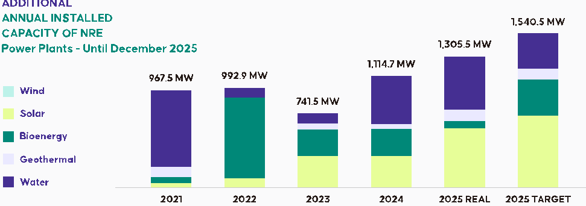
1,540.5 MW
1,305.5 MW
1,114.7 MW
992.9 MW
967.5 MW
Wind
741.5 MW
Solar
Bioenergy
Geothermal
Water
2021
2022
2023
2024
2025 REAL
2025 TARGET
Source: Ministry of Energy and Mineral Resources, 2025¹⁰
⁵ Kementerian Energi dan Sumber Daya Mineral. (2026, January 9). Capaian Positif Tahun 2025, Negara Hadir Penuhi Kebutuhan Energi Masyarakat . . URL
⁶ Kementerian Energi dan Sumber Daya Mineral. (2026). Laporan Kinerja Ditjen EBTKE Tahun 2025 . URL.
⁷ Direktorat Jenderal Ketenagalistrikan Kementerian ESDM. (2026, January 8). Paparkan Capaian Kinerja 2025, Menteri ESDM: Kapasitas Terpasang dan Konsumsi Listrik Meningkat . . URL
⁸ Kementerian Energi dan Sumber Daya Mineral. (2025, August 14). Langkah Awal Realisasi PLTS 100 GW, Menteri Bahlil Temui Perusahaan Solar PV di Tiongkok . . URL
⁹ Lempriere, M. (2024, January 17). Wind and solar capacity in south-east asia climbs 20% in just one year, report finds. Carbon Brief. . URL
¹⁰ Kementerian Energi dan Sumber Daya Mineral. (2026). Laporan Kinerja Ditjen EBTKE Tahun 2025 . . URL

Based on historical trends recorded in the Performance Report of the Directorate General of New, Renewable Energy, and Energy Conservation,¹¹ the average annual addition of installed renewable energy capacity over the last five years has been only 1,025 MW. Under these conditions, achieving the PLTS target of 17 GW in three years¹² requires accelerating renewable energy development at a rate six times faster than the rate over the last five years. This challenge becomes much greater when the government's targets specifically focus on PLTS. Over the last five years, the average annual addition of PLTS capacity was only around 265 MW.¹³ With this trend, the rate of PLTS development needs to increase by around 21 times to reach the government's target of 17 GW within three years.
From a planning perspective, the Electricity Supply Business Plan (RUPTL – Rencana Usaha Penyediaan Tenaga Listrik) 2025-2034¹⁴ targets increasing solar energy capacity by 17.1 GW over 10 years, with 6 GW to be achieved in the first five years of RUPTL (2025-2029). This shows that the target of building 17 GW of PLTS in three years far exceeds the planned pace of solar energy development by the government and PLN through RUPTL. With project limitations and the slow pace of adding PLTS capacity in recent years, accelerating the 100 GW National Solar Energy Program will require greater involvement from the private sector and the community.
Indonesia is also aected by the global energy crisis due to conflicts in the Middle East. Uncertainty in the global oil market could to raise energy subsidies to IDR 150 trillion¹⁵ and increase pressure on the State Revenue and Expenditure Budget (APBN – Anggaran Pendapatan dan Belanja Negara). If oil prices reach 100 US dollars per barrel and there are no significant new sources of revenue, the APBN deficit is estimated to increase by around IDR 200 trillion¹⁶ and exceed 3 percent of Gross Domestic Product (GDP).
Pressure on the APBN is also exacerbated by the high government debt burden. Based on the latest analysis, the government's debt service ratio (DSR), which measures principal and interest payments relative to state revenue, has reached approximately 39.9 percent.¹⁷ This means that almost half of the state's income is used to pay debt and interest. State income must also be allocated to various government priority programs, including the Free Nutritious Meal Program which requires a large budget.¹⁸
On the other hand, Indonesia's energy transition also requires very large financing. Based on calculations by the Ministry of Finance, the costs required for the energy transition in Indonesia reach more than IDR 4,000 trillion¹⁹ (228.6 billion US dollars²⁰) or equal to 1.27 times the estimated revenue in Indonesia's 2026 APBN.²¹ This financing need is also reflected in the electricity sector. To achieve the renewable energy target in the 2025-2034 RUPTL, an investment of around IDR 1,682 trillion (96.1 billion US dollars) is needed, or around 9.6 billion US dollars per year. However, according to the Institute for Energy Economics and Financial Analysis (IEEFA),²² renewable energy investments entering Indonesia in 2023 only reached 1.5 billion US dollars.
¹¹ Ibid.
¹² Rhamadanty, S. M. (2026, May20). Indonesia pacu PLTS 100 GW, tahap pertama dibidik 17 GW. Bloomberg Technoz . URL.
¹³ Kementerian Energi dan Sumber Daya Mineral. (2026). Laporan Kinerja Ditjen EBTKE Tahun 2025 . URL.
¹⁴ Kementerian Eneri dan Sumber Daya Mineral Republik Indonesia. (2025). Rencana Usaha Penyediaan Tenaga Listrik (RUPTL) PLN 2025–2034. Direktorat Jenderal Ketenagalistrikan. URL.
¹⁵ Purnama, A. Y. R. (2026, March 3). Subsidi energi 2026 rawan jebol Rp150 T imbas perang Timur Tengah . Bloomberg Technoz. URL.
¹⁶ Rachman, A. (2026, March 10). Rupiah tertekan harga minyak melambung, begini kondisi APBN terkini . CNBC Indonesia. URL.
¹⁷ Setyawan, A. A. (2026, February 6). Beban utang Indonesia dan negara berkembang lainnya meningkat tahun ini, bagaimana mitigasinya? The Conversation. URL.
¹⁸ Badan Gizi Nasional. (2026, March 30). BGN: Dari Rp26,8T, 93% anggaran digunakan langsung untuk bantuan MBG . URL.
¹⁹ Kementerian Keuangan. (2024, September 6). Menteri Keuangan Sri Mulyani Soroti Dampak Perubahan Iklim terhadap Anjloknya PDB . URL.
²⁰ The exchange rate used is 1 dolar AS = Rp 17,500.
²¹ Kementerian Keuangan. (2025, September 23). APBN 2026 Motor Menuju Pertumbuhan Berkelanjutan. URL.
With this limited fiscal space, accelerating Indonesia's energy transition cannot depend solely on government financing or PLN. The government needs to open up space for greater participation for the private sector and society to accelerate the development of solar energy to support the achievement of the 100 GW National Solar Energy Program without further burdening state finances.
The slow pace of the government and PLN in adding renewable energy, especially solar, shows that achieving the National Solar Energy Program's 100 GW target cannot depend solely on state investment or utility-scale projects. In the midst of the country's fiscal constraints and high investment needs for the energy transition, community and private sector participation is key to accelerate national solar energy development.
In this context, the development of PLTS Atap and the implementation of power wheeling for industry could be among the fastest and most feasible paths to accelerate the addition of solar energy in Indonesia. Through these two schemes, the government does not need to burden the APBN or increase debt to build solar energy capacity, because households and the industrial sector can contribute through its own investment.
PLTS Atap can be a way for households and industries to utilize solar energy to meet their own electricity needs while increasing the share of renewable energy in the national electricity system. Meanwhile, power wheeling is a scheme for joint use of electricity transmission and distribution networks, enabling private electricity producers to deliver renewable energy directly to consumers, such as the industrial sector, while still using the PLN network. This scheme can make it easier for industry to decarbonize and meet targets for renewable energy use, while also helping to achieve a more stable energy supply in terms of availability and price. This becomes increasingly important given that a number of natural gas-using industries, such as ceramics, glass and fertilizer, face supply risks and rising gas prices²³ amid global geopolitical disruption, including conflicts in the Middle East.
Based on 2025 Statistik PLN data,²⁴ total national electrical energy consumption in 2025 was recorded at 317.7 TWh. This electricity demand is dominated by the household sector which accounts for 134.6 TWh or around 42.4 percent of total national electricity consumption, followed by the industrial sector at 95.1 TWh or around 29.9 percent. The high electricity consumption from these two sectors shows that households and industry are the main drivers of national electricity demand.
²² Institute for Energy Economics and Financial Analysis. (2024, July 23). Unlocking Indonesia’s renewable energy investment potential . . URL
²³ Adri, Aguido. (2026, March 24). Manufaktur Domestik: Sudah Pasokan Gas Dalam Negeri Bermasalah, Kini Bahan Baku Sulit. Kompas . . URL
²⁴ PT PLN (Persero). (2026, March). Statistik PLN 2025 (Unaudited) . . URL
Figure 3. Indonesia's Electrical Energy Consumption 2025
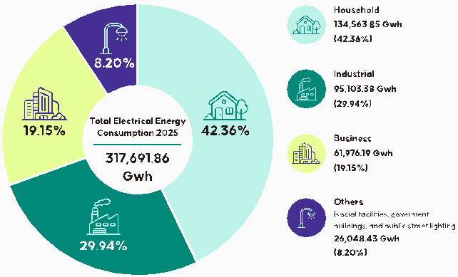
Household
134,563.85 Gwh
(42.36%)
8.20%
Industrial
95,103.38 Gwh
(29.94%)
Total Electrical Energy Consumption 2025
19.15%
42.36%
Consumption 2025
Business
61,976.19 Gwh
317,691.86
(19.15%)
Gwh
Others
(social facilities, goverment
buildings, and public street lighting)
26,048.43 Gwh
29.94%
(8.20%)
Source: PLN Statistic 2025²⁵
Electricity demand from the household and industrial sectors is also projected to continue to increase significantly. Based on the 2025–2034 RUPTL, national electricity consumption is projected to increase to 510.5 TWh in 2034, or around 60 percent above current levels. In the same period, the industrial sector electricity demand is projected to increase by around 99 percent or almost double compared to 2025. Meanwhile, household electricity demand is projected to increase by around 41 percent. This shows that the industrial sector share’s of national electricity demand will increase significantly in the next few years.
The household and industrial sectors are projected to remain the main contributors to national electricity demand in 2034, with almost equal portions, namely around 37 percent each of total national electricity consumption. The dominance and growth of electricity demand from the household and industrial sectors indicate that these sectors have the potential to become the main markets for solar energy in Indonesia.
²⁵ PT PLN (Persero). (2026, March). Statistik PLN 2025 (Unaudited) . . URL
Figure 4. Projections of Indonesian Electricity Demand per Sector
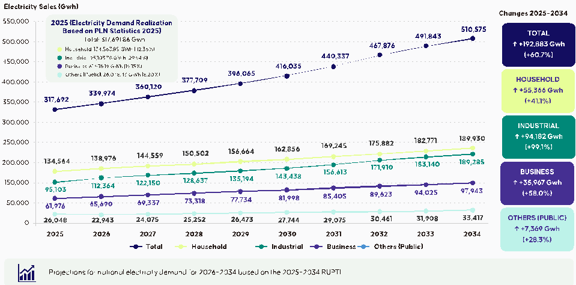
Electricity Sales (Gwh)
Changes 2025–2034
550,000
2025 (Electricity Demand Realization Based on PLN Statistics 2025)
510,575
Based on PLN Statistics 2025)
TOTAL
491,843
Total: 317,691.86 Gwh
500,000
↑ +192,883 Gwh
467,876
Household: 134,563.85 GWh (42.36%)
(+60.7%)
440,337
Industrial: 95,103.38 GWh (29.94%)
450,000
416,035
Business: 61,976.19 GWh (19.15%)
396,065
Others (Public): 26,048.43 GWh (8.20%)
HOUSEHOLD
377,709
400,000
360,120
↑ +55,366 Gwh
339,974
317,692
(+41.1%)
350,000
300,000
INDUSTRIAL
↑ +94,182 Gwh
189,930
182,771
250,000
175,882
169,245
(+99.1%)
162,856
156,664
150,502
144,559
138,976
134,564
189,285
200,000
183,140
171,910
BUSINESS
156,613
143,438
135,194
128,637
↑ +35,967 Gwh
150,000
122,150
112,364
95,103
97,943
94,025
(+58.0%)
89,623
85,405
81,998
77,734
73,318
69,337
50,000
65,690
61,976
OTHERS (PUBLIC)
33,417
31,908
30,461
26,473
25,252
24,075
22,943
26,048
27,744
29,075
0
↑ +7,369 Gwh
2028
2025
2026
2029
2030
2032
2033
2034
2027
2031
(+28.3%)
Total
Household
Industrial
Business
Others (Public)
Projections for national electricity demand for 2026–2034 based on the 2025–2034 RUPTL.
Source: RUPTL 2025-2034²⁶ and PLN Statistic 2025.²⁷
The growth in household electricity consumption creates opportunities for decentralized PLTS Atap development. Meanwhile, the surge in electricity demand in the industrial sector opens up space for larger industrial scale utilization of solar energy through a combination of rooftop solar power plant and solar-based power wheeling schemes. With the increasing demand for electricity in these two sectors, the development of solar energy can not only help meet new electricity supplies but also reduce the investment burden on the government and PLN in achieving the 100 GW National Solar Energy Program.
Enthusiasm for the use of solar energy, especially through PLTS Atap, also continues to increase. This is reflected in a 2021 survey by the Tropical and Renewable Energy Center (TREC) of Universitas Indonesia²⁸ together with Greenpeace in 2021 which found strong among residents of the Greater Jakarta (Jabodetabek), including household, business and industrial sectors, in installing PLTS Atap. Increasing public awareness of solar energy technology has also driven interest in the use of PLTS Atap in recent years.
Figure 5. An overview of RE100 Membership in Indonesia
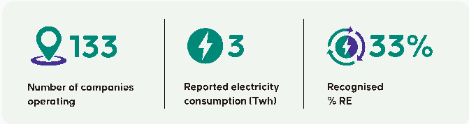
33%
3
133
Recognised
Reported electricity
Number of companies
% RE
consumption (Twh)
operating
Source: RE100 Annual Disclosure Report 2024²⁹
²⁶ Kementerian Energi dan Sumber Daya Mineral. (2025). Rencana Usaha Penyediaan Tenaga Listrik (RUPTL) PLN 2025–2034. Direktorat Jenderal Ketenagalistrikan. URL.
²⁷ PT PLN (Persero). (2026, March). Statistik PLN 2025 (Unaudited) . . URL
²⁸ Greenpeace Indonesia. (2020, December 22). Jakarta Solar City, Jakarta Baru: Solusi Polusi, Emisi dan Ekonomi dengan PLTS Atap . . URL
²⁹ Climate Group RE100. (2025, May 22). 2024 RE100 Annual Disclosure Report . . URL
In the industrial sector, decarbonization pressures and the need to export low-carbon products are also increasing demand for renewable energy. This is important for global RE100 member companies operating in Indonesia as well as for those with targets to use renewable energy. According to the RE100 Annual Disclosure Report 2024, approximately 133 RE100 members operate in Indonesia with a total annual electricity consumption of 3 TWh. However, the use of renewable energy by RE100 members in Indonesia has reached only around 33 percent, below the global average of 53 percent. This condition shows that the need for renewable energy, especially solar energy, in the industrial sector is still very high. In this context, the development of PLTS Atap and the implementation of power wheeling can be an important channel for expanding the use of clean energy, while strengthening the competitiveness of the domestic industry and increasing investment aractiveness for multinational companies with targets to use renewable energy.
However, several obstacles must be overcome to unlock the market potential of solar energy. The elimination of the net metering scheme under Minister of Energy and Mineral Resources Regulation Number 2 of 2024 could reduce public interest as excess electricity exported to the PLN network will no longer be credited against customer electricity bills. Apart from that, PLN's determination of PLTS Atap³⁰ quotas also limits demand growth from the household and industrial sectors. The total PLTS Atap³¹ quota for the 2025–2034 period is only 3,037 MW, or around 300 MW per year.
In fact, this potential domestic demand can be supported by the growing national solar manufacturing capacity. From the supply chain side, national manufacturing capacity can meet domestic market demand. Based on analysis by the Institute for Essential Services Reform (IESR³²), Indonesia's solar manufacturing capacity in 2025 will increase significantly to reach 14.6 GWp per year for modules and 9.5 GWp per year for solar cells, driven by the entry of global Tier 1 producers. However, domestic absorption is still below 1 GWp per year.
Low domestic demand remains the main challenge for the national solar manufacturing industry, alongside the price of local products which are not yet able to compete with cheaper imported products. Therefore, opening up space for participation for the community and industrial sector through PLTS Atap and power wheeling can be a strategic step to expand demand for solar energy while creating a more certain domestic market for the national manufacturing industry.
³⁰ The rooftop solar quota refers to the maximum power capacity that can be connected to the PLN grid by customers who install rooftop solar systems within a given system (Source: RUPTL 2025-2034)
³¹ Kementerian Energi dan Sumber Daya Mineral. (2025). Rencana Usaha Penyediaan Tenaga Listrik (RUPTL) PLN 2025–2034. Direktorat Jenderal Ketenagalistrikan. . URL
³² IESR. (2026, February 23). Report launching on Solar Archipelago: Delivering 100 GW solar PV program in Indonesia in collaboration IESR and The Coordinating Ministry for Economic Aairs (CMEA) . . URL
The strong demand for electricity from the household and industrial sectors indicates that these two sectors have the potential to serve as the primary basis for developing solar energy in Indonesia. With characteristics that are relatively suitable for the adoption of solar energy, both through PLTS Atap and power wheeling schemes, households and industry have the potential to encourage rapid addition of solar energy capacity without being completely dependent on government or PLN investment. This is in line with President Prabowo's ambition to accelerate the achievement of the 100 GW National Solar Energy Program, including the PLTS construction target of 17 GW over three years.
In the household sector, opportunities for developing PLTS Atap mainly come from middle to upper segments of PLN customers who have suicient power capacity and financial capabilities to adopt PLTS Atap independently. Based on Statistik PLN 2025, among the total of around 87.4 million household customers, the strategic opportunity for developing PLTS Atap mainly lies with household customers in the R-2 and R-3 segments, which have greater power capacity and an economic profile that is relatively ready to adopt PLTS Atap.
Figure 6. PLN Customer Structure in the Household Sector in 2025
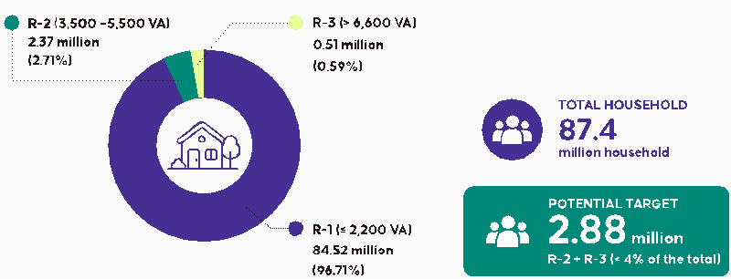
R-3 (> 6,600 V A)
R-2 (3,500 –5,500 V A)
2.37 million
0.51 million
(2.71%)
(0.59%)
TOTAL HOUSEHOLD
87.4
million household
POTENTIAL TARGET
2.88 million
R-1 (≤ 2,200 V A)
84.52 million
R-2 + R-3 (< 4% of the total)
(96.71%)
Source: PLN Statistic 2025.
Assuming gradual adoption in the R-2 and R-3 household segments, the following is the potential for additional solar energy capacity from PLTS Atap using two development scenarios:
• In the moderate scenario, it is assumed that 25 percent of R-2 and R-3 household customers install PLTS Atap with a capacity of 2 kWp. With this assumption, around 720,000 households can contribute to adding 1.44 GWp of national solar energy capacity.
• In the accelerated scenario, it is assumed that 50 percent of R-2 and R-3 household customers install PLTS Atap with a capacity of 2 kWp. With this level of adoption, the potential for additional solar energy capacity could reach around 2.88 GWp.
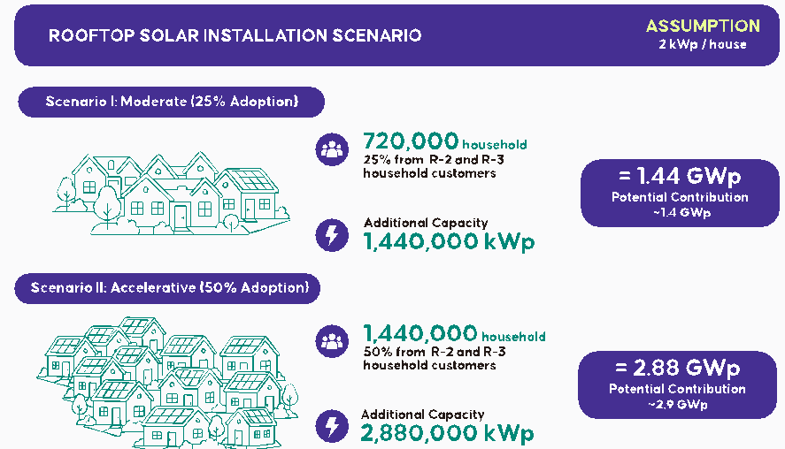
ASSUMPTION 2 kWp / house
ROOFTOP SOLAR INSTALLATION SCENARIO
Scenario I: Moderate (25% Adoption)
720,000 household 25% from R-2 and R-3 household customers
= 1.44 GWp Potential Contribution ~1.4 GWp
Additional Capacity 1,440,000 kWp
Scenario II: Accelerative (50% Adoption)
1,440,000 household 50% from R-2 and R-3 household customers
= 2.88 GWp Potential Contribution ~2.9 GWp
Additional Capacity 2,880,000 kWp
Source: SUSTAIN Analysis
In the industrial sector, opportunities to utilize solar energy mainly stem from the high demand for industrial electricity on Java Island. Apart from being a center of national industrial electricity consumption, this region also benefits from relatively more mature grid infrastructure. Based on Statistik PLN 2025, electricity consumption in the industrial sector on Java Island reached around 74.3 TWh or 78.1 percent of the national industrial sector's total electricity consumption. The dominance of industrial electricity consumption on Java Island shows that this sector has significant potential to encourage additional solar energy capacity through a combination of PLTS Atap and solar energy-based power wheeling schemes.
Apart from having high electricity needs, the character of the manufacturing industry with its large roof area is also relatively ideal for PLTS Atap. On the other hand, the use of solar energy can also support the competitiveness of the national industry in producing low-carbon products while expanding access to global markets. Apart from that, under the power wheeling scheme, PLN can still obtain additional income through network utilization or wheeling fees from grid services, as has also been implemented in Vietnam through the Direct Power Purchase Agreement (DPPA) scheme.³³
³³ Hau, Vu Ba. (2026, 6 March). Navigating Vietnam's DPPA revisions: What they mean for the electricity market? . Reccessary. . URL
INDUSTRIAL SECTOR ELECTRICITY CONSUMPTION 2025
Java Island
74,304.71 Gwh
78.13%
of total industrial electricity consumption
Outside Java
20,798.67 Gwh
21.87%
of total industrial electricity consumption
Total Industrial Sector Electricity Consumption 2025 95,103.38 GWh (95.1 Twh)
Sources: PLN Statistic 2025 and SUSTAIN analysis.
POTENTIAL FOR ADDITIONING SOLAR ENERGY CAPACITY THROUGH A COMBINATION OF PLTS ATAP AND POWER WHEELING IN THE INDUSTRIAL SECTOR ON JA V A ISLAND
Java Industrial Consumption
74.3 TWh = 74,300 Gwh
Assumed Capacity Factor (CF)
20%
*The Assumed Capacity Factor (CF) for solar power is 20 percent, referring to the performance of the PLTS Cirata based on International Energy Agency (IEA) data.
Scenario I: Moderate
~4,240 MWp (≈ 4.2 GWp)
10%
Adoption
Skenario II: Accelerative
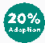
~8,480 MWp (≈ 8.5 GWp)
20%
Adoption
Using the assumption of gradual utilization of solar energy in the industrial sector on Java Island, the following is the potential for increasing solar energy capacity through a combination of PLTS Atap and power wheeling:
• In the moderate scenario, it is assumed that 10 percent of industrial electricity consumption on Java Island is met through PLTS Atap or solar energy-based power wheeling schemes. With these assumptions, the potential for additional solar energy capacity could reach around 4.24 GWp.³⁴
• In the accelerated scenario, it is assumed that 20 percent of industrial electricity consumption on Java Island is met through PLTS Atap or solar energy-based power wheeling schemes. With this level of utilization, the potential for additional solar energy capacity could reach around 8.48 GWp.
In the future, demand for electricity in the industrial sector on Java Island is projected to increase by around 55.9 percent between 2025 and 2034. In this context, the use of solar energy through a combination of PLTS Atap and power wheeling schemes for industry can be a strategic solution to accelerate the achievement of the 100 GW Program target while meeting future electricity demand surges.
³⁴ The calculation in this scenario uses an assumed annual average solar capacity factor (CF) of 20 percent, referencing the performance of the Cirata solar PV plant based on International Energy Agency ( ) data. IEA

Overall, the combination of developing household PLTS Atap and utilizing solar energy in the industrial sector through PLTS Atap and power wheeling shows the potential for significant additional solar energy capacity in a relatively short time.
• Residential PLTS Atap (25% adoption by R-2 and R-3 customers with a capacity of 2 kWp): ~1.4 GWp
• Java industrial PLTS Atap and power wheeling (10% penetration): ~4.2 GWp
• Total potential solar energy capacity: ~5.6 GWp
• Residential PLTS Atap (50% adoption by R-2 dan R-3 customers with a capacity of 2 kWp): ~2.9 GWp
• Java industrial PLTS Atap and power wheeling (20% penetration): ~8.5 GWp
• Total potential solar energy capacity: ~11.4 GWp
This potential suggests that rooftop solar PV and power wheeling could become important drivers of the National 100 GW Solar Program. Under a moderate scenario, additional solar capacity could reach around 5.6 GWp. Meanwhile, under an accelerated scenario, additional solar capacity could reach approximately 11.4 GWp within a relatively short period, making it a significant contributor toward achieving the national target of developing 17 GW of solar PV capacity within the next three years.
Figure 9. Estimated Total Potential Contribution of Solar Energy to the Household and Industrial Sectors
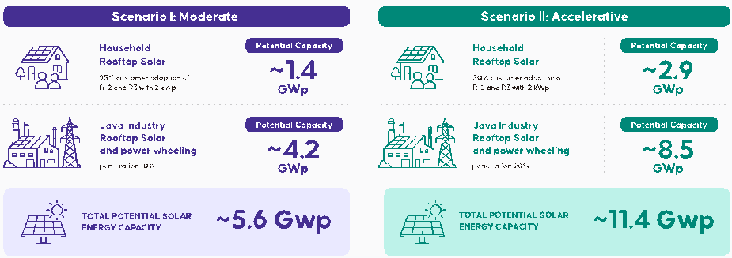
Scenario II: Accelerative
Scenario I: Moderate
Potential Capacity
Potential Capacity
Household
Household
Rooftop Solar
Rooftop Solar
~1.4 GWp
~2.9 GWp
25% customer adoption of R-2 and R3 with 2 kWp
50% customer adoption of R-2 and R3 with 2 kWp
GWp
GWp
R-2 and R3 with 2 kWp
R-2 and R3 with 2 kWp
Java Industry
Java Industry
Potential Capacity
Potential Capacity
Rooftop Solar
Rooftop Solar
~4.2 GWp
~8.5 GWp
and power wheeling
and power wheeling
penetration 10%
penetration 20%
GWp
GWp
~5.6 Gwp
~11.4 Gwp
TOTAL POTENTIAL SOLAR ENERGY CAPACITY
TOTAL POTENTIAL SOLAR ENERGY CAPACITY
ENERGY CAPACITY
ENERGY CAPACITY
Source: SUSTAIN Analysis.
With a relatively short development time and supported by existing electricity demand from the household and industrial sectors, solar energy has an important role in helping meet national electricity needs while supporting Indonesia's energy transition in the future.
The development of solar energy through PLTS Atap and power wheeling has significant potential to accelerate the achievement of the 100 GW National Solar Energy Program while increasing the penetration of variable renewable energy in the national electricity system. However, accelerating solar energy on a large scale also requires transforming the electricity system, especially by strengthening the electricity network and grid flexibility to integrate renewable energy on a larger, more stable scale. In this context, grid financing will also be a key challenge in accelerating the 100 GW National Solar Energy Program.
Based on RUPTL 2025–2034, PLN is targeting the construction of a transmission network of 47,758 kms, including 13,889 kms in Java-Madura-Bali; 20,967 kms in Sumatra and Kalimantan; and 12,901 kms in Sulawesi, Maluku, and Papua, as well as main substations with a capacity of 107,950 MVA, with investment requirements reaching IDR 392.1 trillion. Meanwhile, distribution and rural electrification reached IDR 173.2 trillion. Thus, the total grid investment requirement reaches IDR 565.3 trillion during the 2025–2034 RUPTL period, or IDR 56.5 trillion per year on average.
On the other hand, based on analysis by the Climate Policy Initiative,³⁵ transmission and grid financing in Indonesia currently still relies heavily on PLN's financial balance. amid limited fiscal space and debt capacity, it will be very burdensome for PLN to cover transmission financing needs through large, long-term capital expenditures. This condition has the potential to limit grid expansion and become a boleneck to accelerating the energy transition.
In this context, the government needs new domestic funding sources to support the long-term development of electricity infrastructure and the integration of renewable energy. One option is to increase coal production levies. Based on SUSTAIN³⁶ calculations using various price scenarios and the real amount of coal production in 2022, 2023, and 2024, the Prabowo government has the potential to obtain additional state revenue of 5.63 billion US dollars or IDR 98.5 trillion per year in the minimum scenario, up to 23.58 billion US dollars or IDR 412.65 trillion per year in the maximum scenario.
³⁵ Climate Policy Initiative. (2026, May 12). Alternative models for transmission financing in Indonesia . . URL
³⁶ SUSTAIN. (2024, December 17). Peningkatan Pungutan Produksi Batu Bara: Peluang Transisi Energi dalam Keterbatasan Fiskal . . URL

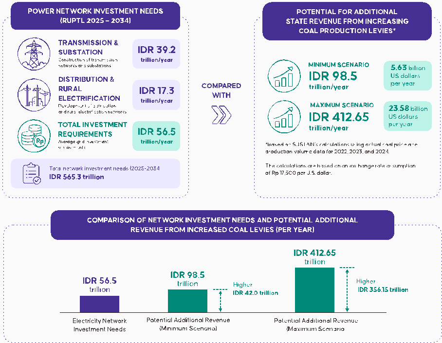
POWER NETWORK INVESTMENT NEEDS
POTENTIAL FOR ADDITIONAL
(RUPTL 2025 – 2034)
STATE REVENUE FROM INCREASING
COAL PRODUCTION LEVIES*
TRANSMISSION &
IDR 39.2
SUBSTATION
trillion/year
Construction of transmission
MINIMUM SCENARIO
networks and substations
5.63
billion
IDR 98.5
US dollars
DISTRIBUTION &
per year
COMPARED
trillion/year
RURAL
IDR 17.3
WITH
ELECTRIFICATION
trillion/year
MAXIMUM SCENARIO
Development of distribution
23.58
billion
and rural electrification networks
IDR 412.65
US dollars
per year
TOTAL INVESTMENT
trillion/year
IDR 56.5
REQUIREMENTS
trillion/year
Average grid investment
*Based on SUSTAIN’s calculations using actual coal price and production volume data for 2022, 2023, and 2024.
requirements
production volume data for 2022, 2023, and 2024.
The calculations are based on an exchange rate assumption of Rp 17,500 per U.S. dollar.
Total network investment needs (2025-2034)
of Rp 17,500 per U.S. dollar.
IDR 565.3 trillion
COMPARISON OF NETWORK INVESTMENT NEEDS AND POTENTIAL ADDITIONAL
REVENUE FROM INCREASED COAL LEVIES (PER YEAR)
IDR 412.65 trillion
trillion
IDR 98.5
IDR 56.5
Higher
trillion
Higher
trillion
IDR 356.15 trillion
IDR 42.0 trillion
Potential Additional Revenue
Potential Additional Revenue
Electricity Network
(Minimum Scenario)
(Maximum Scenario)
Investment Needs
Sources: RUPTL 2025-2034³⁷ and SUSTAIN³⁸.
With an average grid investment requirement of around IDR 56.5 trillion per year, the potential for additional state revenue from increasing coal production levies, even in the most conservative scenario, is still far above this need. This shows that increasing coal levies could be an adequate source of domestic funding to support the construction of electricity networks and the large-scale integration of solar energy, thereby advancing the sustainable transformation of the national electricity system. In fact, this excess revenue can create new fiscal space to accelerate renewable energy development, including the 100 GW solar energy program, green industry development, and other national energy transition initiatives.
³⁷ Kementerian Energi dan Sumber Daya Mineral. (2025). Rencana Usaha Penyediaan Tenaga Listrik (RUPTL) PLN 2025–2034. Direktorat Jenderal Ketenagalistrikan. . URL
³⁸ SUSTAIN. (2024, December 17). Peningkatan Pungutan Produksi Batu Bara: Peluang Transisi Energi dalam Keterbatasan Fiskal. URL
In recent years, India has become one of the world's fastest-growing countries in renewable energy. Based on data from the Indian Ministry of New and Renewable Energy,³⁹ up to November 2025, the addition of renewable energy capacity reached 44.5 GW in one year, almost double the previous annual addition. Of this amount, around 35 GW comes from solar energy, bringing the total installed capacity of PLTS in India to around 132.8 GW.
With this achievement, India has succeeded in achieving the target of 50 percent installed non-fossil based electricity capacity by 2025, or five years faster than the Nationally Determined Contribution (NDC) target in the Paris Agreement in 2025, with India's non-fossil generating capacity having reached around 51.5 percent of the total national electricity capacity. This experience in India shows that increasing the capacity of solar energy does not necessarily require the construction of power plants by the government or electricity utility companies.
The growth of solar energy in India is also increasingly driven by direct demand from the industrial and commercial sectors through Open Access or power wheeling schemes. This scheme allows electricity consumers to purchase renewable energy directly from private developers, using the existing transmission network. Based on IEEFA's analysis,⁴⁰ although the legal basis has existed since the Electricity Act 2003, significant acceleration only occurred after the Indian government strengthened regulatory reform through the 2022 Green Energy Open Access (GEOA) Rules.
Through the 2022 GEOA Rules, the Government of India creates regulatory certainty and simplifies the process of procuring green electricity for the industrial sector, including lowering the threshold for consumers who can access 1 this scheme from 1,000 kW to 100 kW,⁴ clarifying the mechanism for using the network, as well as providing various incentives such as exemption from transmission costs (waiver) for renewable energy projects with a certain time limit.
On the other hand, demand for green electricity from the industrial sector is also increasing rapidly, especially from companies that are starting to pursue RE100 targets and ESG standards. For industrial players, the open access scheme is becoming increasingly aractive because the cost of solar electricity from the
³⁹ Press Information Bureau. (2025, December 29). 2025 marks highest-ever renewable energy expansion in India's energy transition journey. Ministry of New and Renewable Energy, Government of India. . URL
⁴⁰ Institute for Energy Economics and Financial Analysis. (2024, December 11). Regulatory clarity helped green energy open access installed capacity grow by 90% between FY2023 and FY2024. . URL
⁴¹ The Economic Times. (2022, November 11). Green energy open access portal launched; consumers with 100kW sanctioned load to get renewables supply . . URL
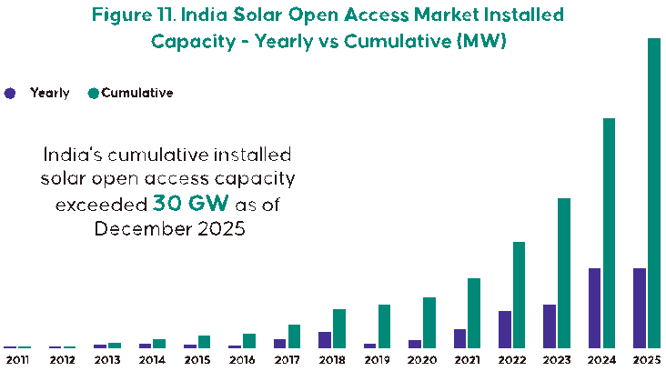
Yearly
Cumulative
India's cumulative installed
solar open access capacity
30 GW
exceeded
as of
December 2025
2011
2012
2013
2014
2015
2016
2017
2018
2019
2020
2021
2022
2023
2024
2025
*Previous years, quarters, and cumulative totals may have been updated based on late announcements and inclusions
Source: Mercom India, 2025.⁴³
Cumulatively, India's open access solar capacity will exceed 30 GW by the end of 2025,⁴⁴ with more than 45 GW of projects still under development and preconstruction. This growth shows that opening market access and deregulation can encourage demand for solar energy from the industrial sector while mobilizing private investment without relying entirely on the state's fiscal capacity or the state electricity utility’s investment. The situation in India is also relevant for sectors with high electricity consumption in Indonesia, such as industrial areas, smelters, data centers, and export-oriented manufacturing industries which are starting to face the demands of decarbonization in global supply chains.
A simpler licensing process and more stable regulatory certainty are also important factors in encouraging the acceleration of renewable energy in India. However, India's experience also shows that opening market access needs to be accompanied by strengthening electricity network infrastructure because India still faces the challenge of network limitations amid the rapid development of solar energy. Therefore, accelerating solar energy in Indonesia not only requires capacity targets, but also strengthening regulations and network infrastructure readiness so that the growing demand for solar energy can be translated into real investment and solar energy installations.
⁴² Gowda, S. (2026, March 13). Open access solar set to drive next phase of India's C&I growth . pv magazine. . URL
⁴³ Mercom India. (2026). Q4 and Annual 2025 India Solar Open Access Market Report- 7.8 GW Installed in 2025. URL.
⁴⁴ Ibid.